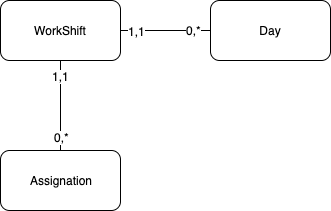

Welcome to WorkShift Engine’s documentation!¶
Hello!. Thanks for been here and I hope that this package will be usefull for you. Before start using any of these tools you need to understand some strcutures.
In the most of the services we will talk about “assignation”. This concept is a Python object that you must provide. The structure should be like:
Assignation Model¶
starting_date: the date where your assignation starts
ending_date: the date where your assignation ends
person(FK): the person realted to this assignation
person_id: the person_id related to this assignation
workshift(FK): the workshift related to this assignation
workshift_id: the workshift_id related to this assignation
starting_day: is an offset, is the number from where the assignation is valid
WorkShift Model¶
Also you’ll need a “WorkShift model” with at least these attributes:
total_workshift_days: the number of days that a workshift cycle lasts
workshift_type: the workshift type (weekly, cyclic or manually)
This attribute only will be used when the “starting_day” attribute has a value(not None). Otherwise it must be setted as None.
An these methods:
get_days(): Get a list of the days
Day Model¶
This model should represent a day structure of an specific workshift. Their attributes shoud be at least:
starting_time: the time where the person should work that day
ending_time: the time whefre the person should leave the work that day
day_number: a string number that represent the day order in the specific work shift
So in summary these models must represent an ERM like this:
So after you understand which objects and how their structure should be, we are ready to keep going with this tutorial.
As you can see in the ERM, we can access to every model from the Assignation model. So from here we will use just the Assignation model.
For this model we will use a Proxy, so if you want to make you Assignation model compatible with the work shift engine, you must create a Proxy.
from proxies.proxy_factory import ProxyFactory
assignations = MyAssignationModel.objects.all()
assignation_proxies = ProxyFactory.create_multiple_assignation_proxies(assignations)
We’re done with the first part, now that we have all our Proxy Assignations we are ready to use all the work shift engine services! :D
Contents: